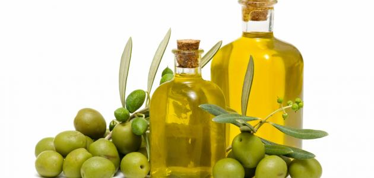

موضوع عن زيت الزيتون
تمت الكتابة بواسطة:
ساندرا لحدو
آخر تحديث: ٠٦:١٩ ، ٢ أغسطس ٢٠٢٢

محتويات
- زيت الزيتون
- فوائد زيت الزيتون
- القيمة الغذائية لزيت الزيتون
- أضرار زيت الزيتون
- المراجع
زيت الزيتون
يعد زيت الزيتون
من أقدم الزيوت التي استخدمت لآلاف السنين، ويعتبر هو الوحيد الذي لا يُستخرج من البذور، أو الحبوب،
أو المكسرات، بل إنّه يُستخرج من ثمار
شجرة الزيتون ، ويختلف مذاقه ولونه وِفقَ درجة نُضج الثمار، ونوع التربة، والمناخ، كما يتدرج لونه بين اللون المائل للشفاف إلى اللون الأخضر الداكن، ويختلف هذا حسب عمليّة تكرير الزيت، ويتسم زيت الزيتون ذا الجودة الجيدة بكثافته، ومن الجدير بالذكر أنّ زيت الزيتون يحتوي على نسبة عالية من الدهون الأحادية
غير المشبعة (بالإنجليزيّة: Monounsaturated)،
وتليها الدهون المتعددّة غير المشبعة (بالإنجليزيّة:
Polyunsaturated)، وكمية قليلة جداً من
الدهون المشبعة.
فوائد زيت الزيتون
يوجد لزيت الزيتون العديد من الفوائد
الصحيّة للجسم، وفيما يأتي أهم الفوائد:
- إمكانيّة تقليل الوزن: على الرغم من أنّ استهلاك كميات كبيرة من الدهون يؤدي لزيادة الوزن، إلا أنّ العديد من الدراسات وجدت علاقة بين حمية البحر الأبيض المتوسط التي تتضمّن الكثير من زيت الزيتون مع التأثير الإيجابي في وزن الجسم، وقد وضحت إحدى الدراسات أنّ استهلاك كميات عالية من هذا الزيت لم يرتبط بزيادة في الوزن، كما أشارت دراسة أخرى إلى أنّ اتّباع نظام غنيّ بزيت الزيتون قد ارتبط بارتفاع مستويات مضادات الأكسدة في الدم، وبخسارة الوزن.
- امتلاك خصائص مُضادّة للالتهابات: حيث يمكن لتناول زيت الزيتون البكر أن يقلل الإصابة بالالتهابات، وذلك لاحتوائه على مُركب الأوليوكانثال (بالإنجليزية: Oleocanthal)، وغيره من مضادات التأكسد، ويمتاز هذا المركب بعمله المشابه لدواء الإيبوبروفين (بالإنجليزية: Ibuprofen) المُضادّة للالتهابات، وتشير الدراسات إلى أنّ حمض الأولييك (بالإنجليزيّة: Oleic acid) قد يقلّل من مستويات مؤشّرات الالتهاب، مثل: البروتين المتفاعل-C (بالإنجليزيّة: C-reactive protein).
- خفض خطر الإصابة بأمراض القلب: حيث أشار الباحثون إلى أنّ تناول الأطعمة المقليّة بزيت الزيتون أو زيت دوّار الشمس لا يؤدي لزيادة خطر الإصابة بأمراض القلب أو الوفاة، كما لوحظ بمنطقة البحر الأبيض المتوسّط أنّه على الرغم من تناول هذه الأطعمة بكميات كبيرة إلا أنّ ذلك لم يرتبط بزيادة خطر الإصابة بأمراض القلب التاجيّة (بالإنجليزيّة: Coronary heart disease)، ومن الجدير بالذكر أنّ قلي الأطعمة بزيت الزيتون يحافظ على كميات أكبر من محتواها من العناصر الغذائيّة مقارنة مع سلق هذه الأطعمة.
- تقليل خطر الإصابة بالسكتات الدماغيّة: حيث وُجد أن كبار السنّ الذين يتناولون زيت الزيتون بانتظام يقل خطر إصابتهم بالسكتات الدماغيّة مقارنة بالأشخاص الذين لا يتناولونه بنسبة 41%.
- انخفاض معدل الإصابة بمرض ألزهايمر: وذلك في منطقة البحر المتوسط التي تتسم بارتفاع مستوى الاستهلاك لزيت الزيتون فيها مقارنة بغيرها من البلدان.
- المساعدة على علاج التهاب المفاصل الروماتويدي: حيث أُجريت دراسة تم فيها اثبات أنَ تناول مكملات زيت الزيتون مع مكملات زيت السمك الذي يُعتبر مصدراً لمضادات الالتهاب الغنيّة بأوميغا-3 حسنَ من مسكة اليد، وألم المفاصل، والتيبس الصباحي عند الأشخاص المصابين بهذا المرض.
- خفض خطر الإصابة ببعض أنواع السرطان: حيث وجدت إحدى الدراسات أنّ استهلاك زيت الزيتون عوضاً عن أنواع الدهون الاخرى؛ وبشكل خاصّ الدهون المشبعة قد يقلّل خطر الإصابة بسرطان الثدي، والجهاز الهضمي العلوي، وأورام المسالك التنفسية، وسرطان القولون والمستقيم، وغيرها، ومن الجدير بالذكر أنّ زيت الزيتون يقلل الإجهاد التأكسدي وذلك لاحتوائه على فيتامين هـ؛ الذي يساهم بدوره في تقليل خطر الإصابة بالسرطان أيضاً.
- تحسين وظائف الكولسترول الجيّد: حيث أشارت إحدى الدراسات الحديثة إلى أنّ النظام الغذائي لسكان منطقة البحر الابيض المتوسط الغنيّ بزيت الزيتون البكر يمكن أن يعزّز وظائف الكولسترول الجيّد عند الأشخاص الأكثر عرضة للإصابة بأمراض القلب، حيث إنّ هذا النوع من الكولسترول لا يعمل بشكل جيّد لديهم، كما أشارت بعض الدراسات التي أجريت على عينةٍ صغيرةٍ من الأشخاص إلى أن تناول الأطعمة عالية المحتوى من مضادات التأكسد؛ ومنها زيت الزيتون البكر يحسّن من وظائف الكولسترول الجيّد في جسم الإنسان كالتخلّص من الكولسترول الزائد في الشرايين، كما يعمل كمضادّ للتأكسد، ويحافظ على الأوعية الدمويّة مفتوحة، ممّا يقلّل خطر الإصابة بالأمراض القلبية الوعائية.
القيمة الغذائيه لزيت الزيتون
يوضح الجدول الآتي بعض محتويات العناصر الغذائيّة من ما يُعادل 100 مليلترٍ من زيت الزيتون البكر:
[جدول]
أضرار زيت الزيتون
يعدّ زيت الزيتون من الزيوت الآمنة على الصّحة، وذلك سواء تمّ تناوله عبر الفم أو استخدامه خارجيّاً على الجلد، ويمكن استهلاك هذا الزيت بشكل آمن إن كان يُشكل 14% من السعرات الحراريّة اليوميّة، وهو ما يساوي ملعقتان كبيرتان منه، ومع ذلك فإنّ تناوله يؤدي للشعور بالغثيان عند قلّةٍ من الناس، كما أنّ تطبيقه على الجلد قد أدّى في بعض الحالات لتأخير الاستجابة التحسّسية، والإصابة بالتهاب الجلد (بالإنجليزيّة: Dermatitis)، وبالإضافة إلى ذلك فإنّ استخدامه داخل الفم بعد علاج الأسنان يمكن أن يزيد حساسيتها، وتجدر الإشارة إلى أنّ هنالك عدّة محاذير أخرى لهذا الزيت مرتبطة ببعض الفئات، وفي الآتي أهم هذه المحاذير:
- الحمل والرضاعة: إذ إنّه لا تتوفّر معلومات كافية حول سلامة استعمال منتجات الزيتون بالنسبة للحامل والمُرضع، ولذلك يُنصح بتناوله بالكميّات الموجودة في الغذاء فقط خلال هذه الفترة.
- مرضى السكري: حيث يمكن أن يقلّل زيت الزيتون مستويات السكر في الدم، ولذلك يُنصح المرضى المصابين بالسكري بمراقبة مستويات السكر لديهم عند تناوله.
- المعرضون لإجراء العمليات الجراحيّة: إذ يُوصى بالتوقّف عن استهلاك زيت الزيتون قبل موعد إجراء الجراحة بأسبوعين على الأقل، حيث يمكن أن يتداخل تناوله مع قدرة الجسم على ضبط مستويات السكر في الدم أثناء الجراحة وبعدها.